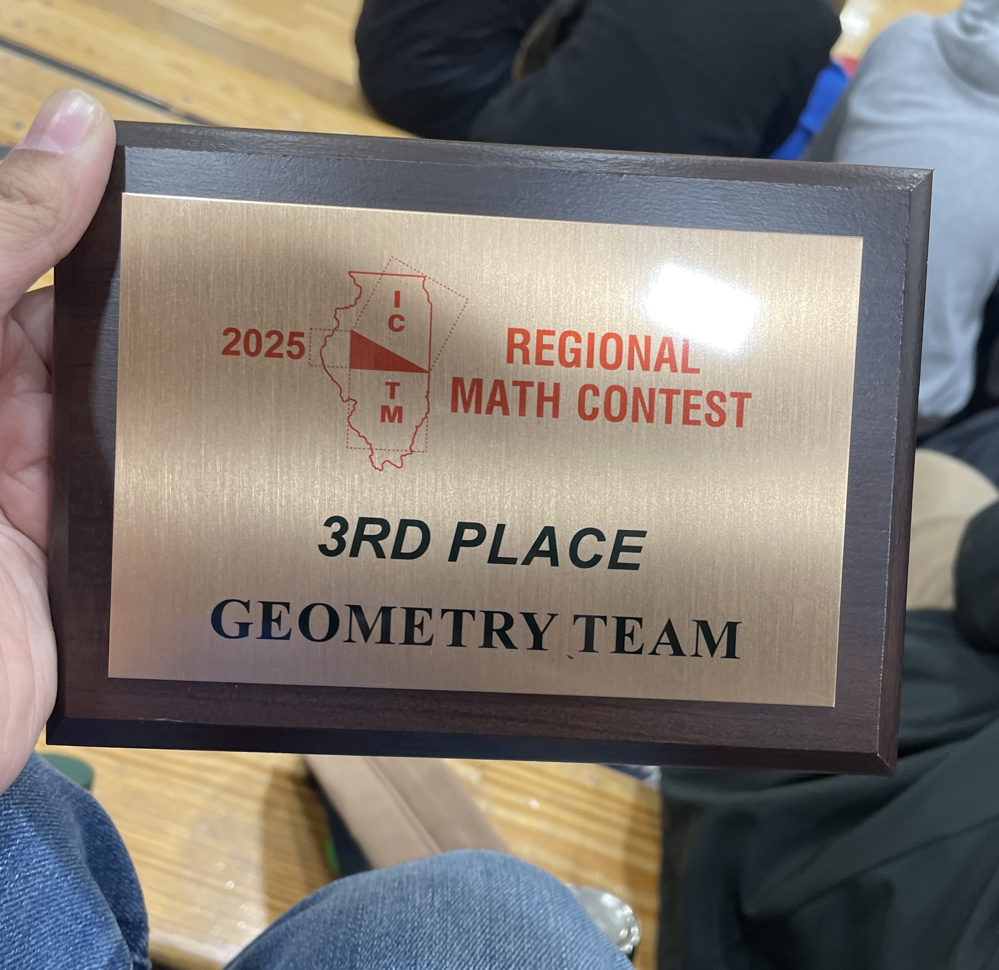
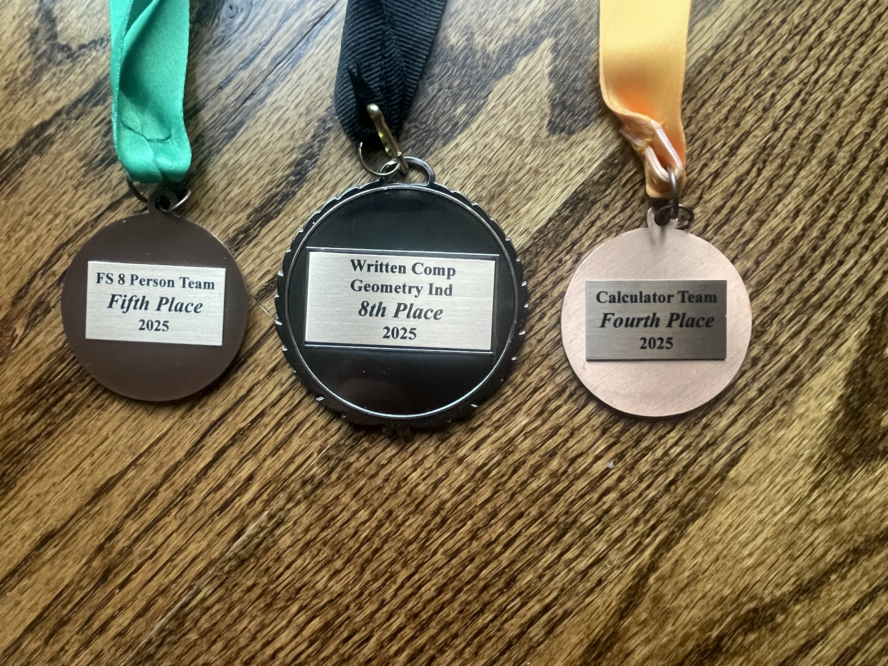
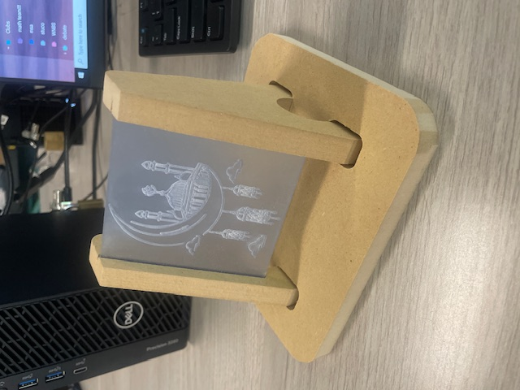
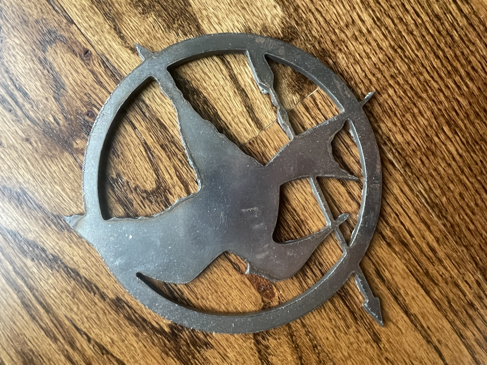
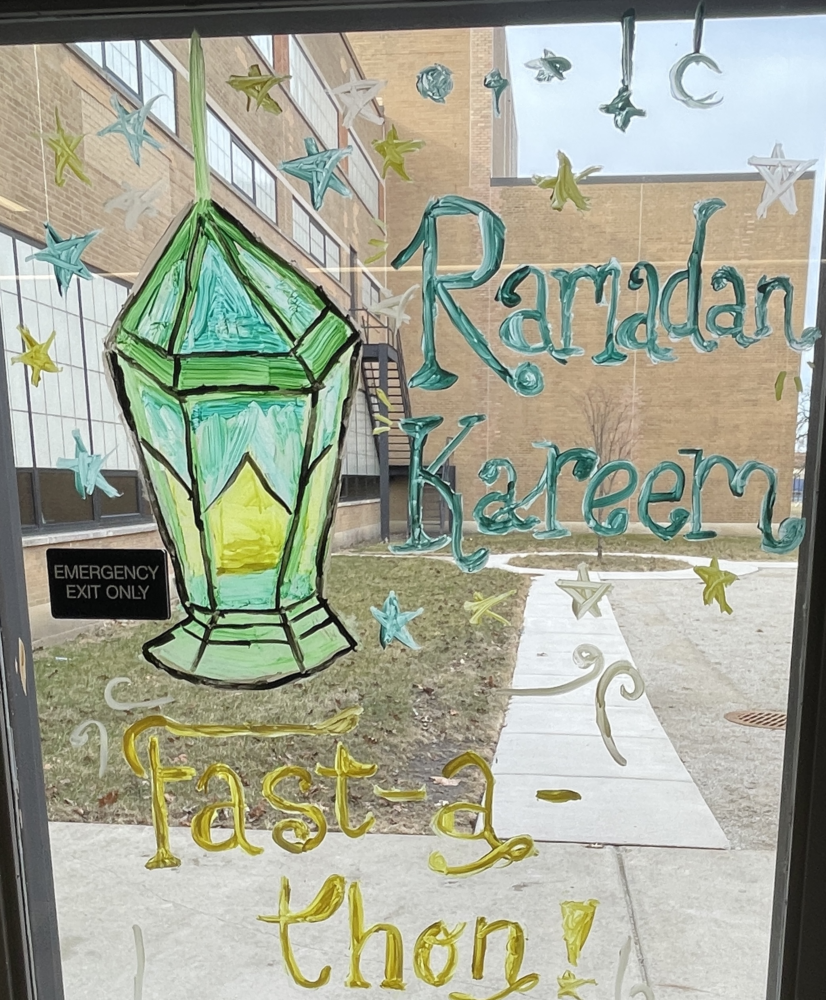
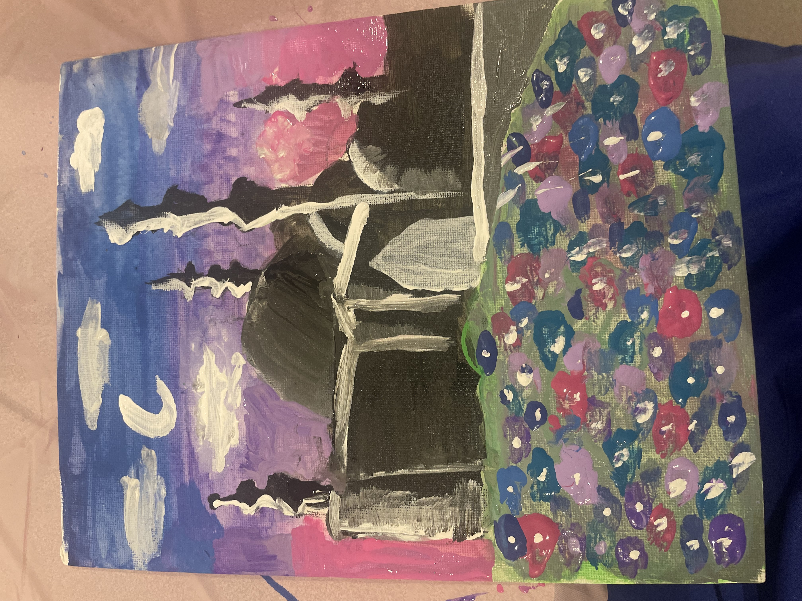
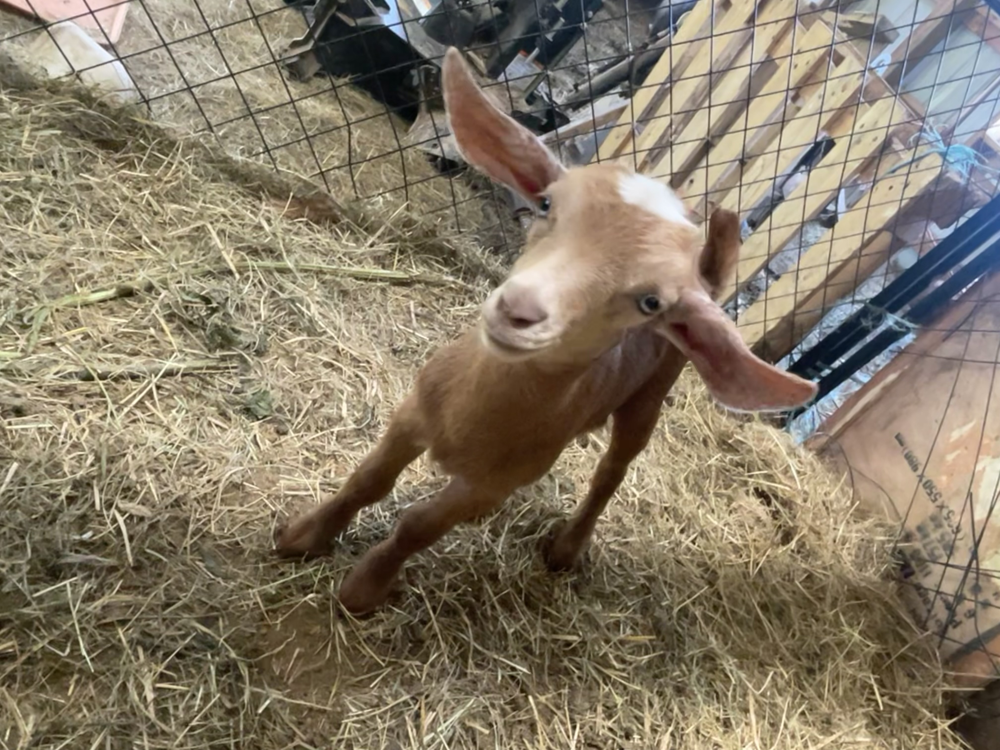
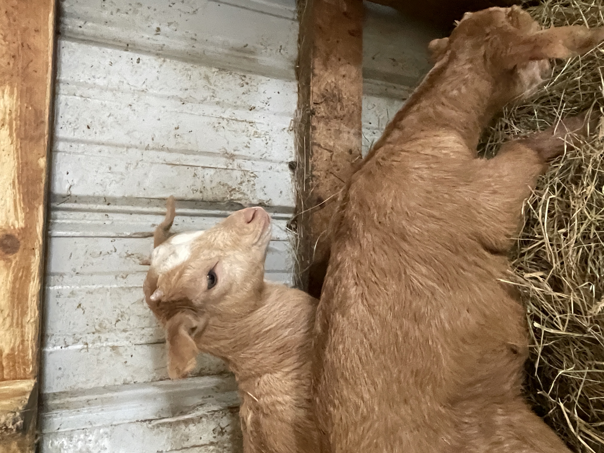

academics

this is my national history day exhibit entry! for this project, i researched World War II propaganda in films and comics. I made it to the state level, where I was a state finalist! :)

I also got to see Abraham Lincoln's house when I was there!


i'm on my school's math team! It's one of my favorite activities, and this past year we went to state and were very successful! At the regional contest (which qualified us for state) I got 8th place in the individual written contest. At state, we got 5th place in the Freshman-Sophomore team competition, and 4th place in the Calculator team competition1


This past year I took PLTW Intro to Engineering, where I learned how to 3d model using Fusion 360 to make all sorts of cool things! These are two of my favorite projects I made--a laser-engraved acrylic design (the wood was cut on a ShopBot CNC, and the acrylic was engraved using a laser cutter) and a laser-cut silhouette of the Mockingjay pin from the Hunger Games! I'm taking PLTW Computer Integrated Manufacturing next year, and I'm excited to learn a lot more. :)
miscellaneous


I'm very active in my school community! I'm on the board of my school's Muslim Student Association--the first image is from when we painted the cafeteria windows for one of our largest events, and the second is from a painting event we hosted!


I have goats!! (However, I don't actually live on a farm.) These are two of our baby goats that were born this spring! I also have some more goat pictures over on the gallery page!
and a cow one too...oh yeah we have 5 cows! :)